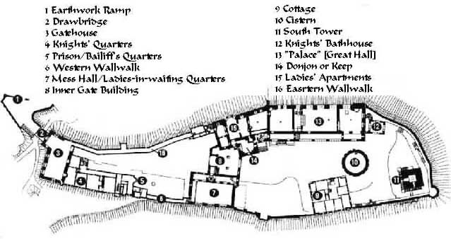

Glasgow
The Glasgow Tour continues to be our most popular tour. This two-week excursion takes you to some of the most awe-inspiring scenery in Scotland; yet provides plenty of shopping time and sight-seeing in the beautiful city of Edinburgh.
Itinerary
- Day 1: Arrive in Glasgow
- Day 2: Train to Glencoe
- Day 3: Second day in Glencoe
- Day 4: Train to Fort William and Glenfinnan
- Day 5: Boat through the Kyle of Lochalsh
- Day 6: Train to Loch Ness and Fort William
- Day 7: Free Day
- Day 8: Trip to Aviemore and Pitlochry
- Day 9: Train to Edinburgh
- Day 10: Second day in Edinburgh
- Day 11: Third day in Edinburgh
- Day 12: Trip to Sterling
- Day 13: Train to Glasgow
- Day 14: Depart from Glasgow
The trip begins with two days in Glencoe, the site of the famous massacre of the MacDonald clan by the Stewarts. Take some time to go hiking. Several movies have been filmed in Glencoe, including Braveheart and Glasgower. Maybe you'll get a chance to be an extra in this year's production!
From Glencoe, the tour travels north, following the trail of Bonnie Prince Charlie to Glenfinnan. You'll also take a boat trip to view castle ruins along the Kyle of Lochalsh. A trip to Loch Ness follows. Perhaps you'll see Nessie!
For city-dwellers, you'll enjoy the next three days in Edinburgh. Do some shopping along the Royal Mile, or climb Arthur's Seat for a awesome view of the city. If you love castles, visit Edinburgh castle and Sterling castle too.
From the Lake District, we go to York for two fun-filled days. Tour the awesome York Minster, one of the most beautiful cathedrals in Europe. York is also home to underground ruins of one of the earliest Roman settlements in Britain.
The tour concludes with a trip to Glasgow.

| Castles of Scotland | • | Edinburgh | • | Loch Ness | • | Glasgow |
• 1-(800)555-8110 •